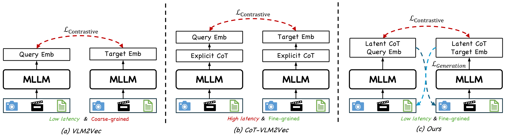
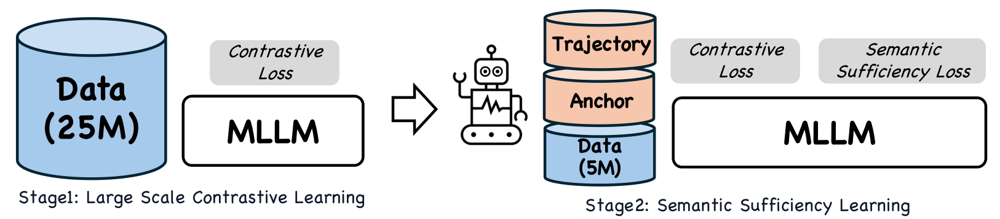
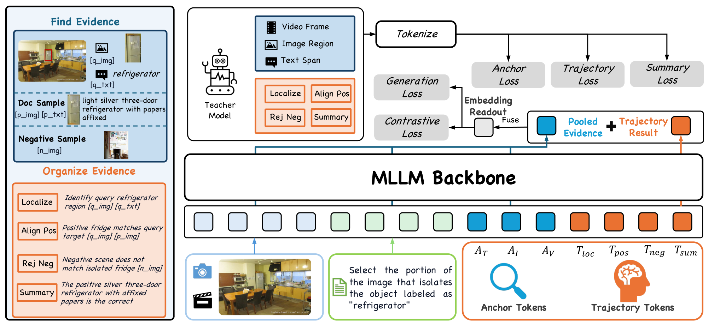
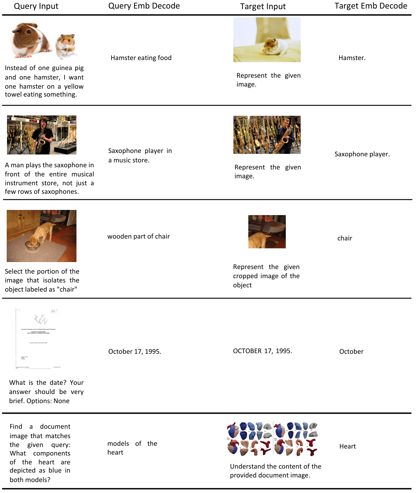
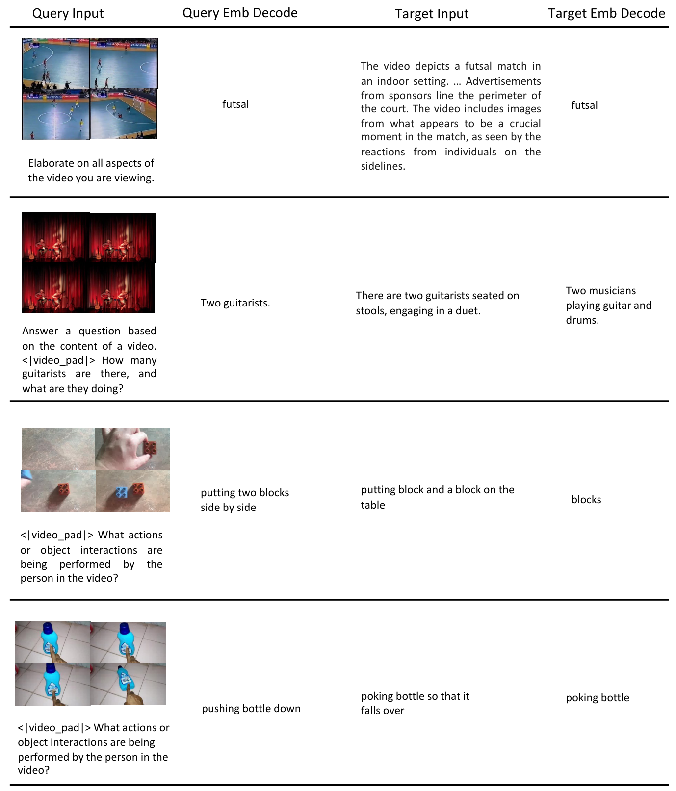
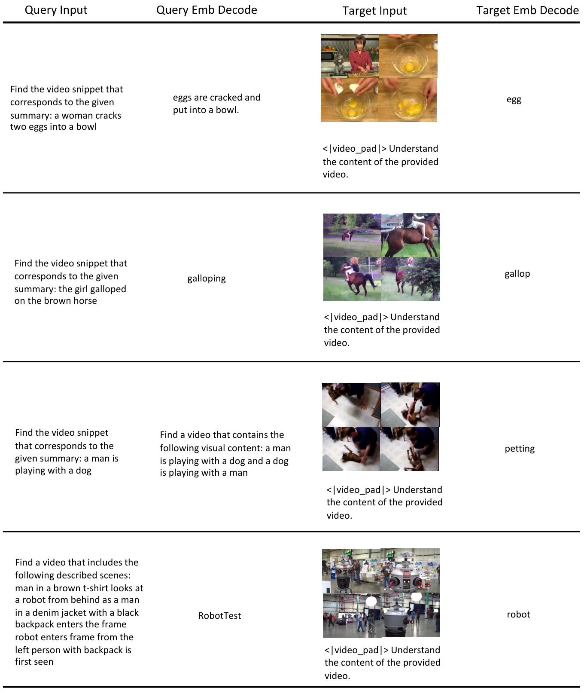
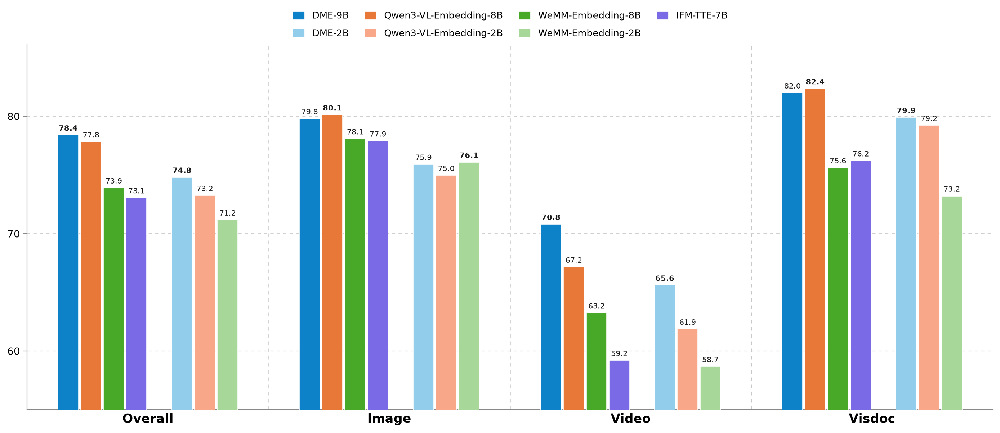

多模态表示学习是现代AI的基石。把多模态查询与目标编码成向量，它驱动着工业级搜索与推荐，并越来越支撑着现代智能体。但真实平台（抖音、小红书、YouTube）同时要求两件事：十亿级索引下的效率，以及硬匹配所需的细粒度语义判别：现有MLLM嵌入模型很难两者兼得。
对比模型（contrastive）高效但依赖成对级监督，对细粒度区分来说太粗；而基于CoT的模型通过显式生成提升了判别，却在线上在线服务时不实用。为此我们提出Douyin Multimodal Embedding（DME），把两者的优点结合起来，满足工业界对「高效 + 细粒度」表示的双重需求。
对比式MLLM嵌入器（如VLM2Vec）单向一次性编码两侧（查询与目标），得到的是点级表征：高效，但成对监督过于粗糙，难以刻画细粒度的区分。
基于CoT的嵌入器在嵌入前显式接入推理，用显式生成提升判别力，但代价是推理速度与在线服务成本。

DME采用的是「隐式（潜在）推理 + 交叉条件生成式监督」的组合：既保留推理带来的判别力，又维持bi-encoder的高效性：潜在token留在单次前向编码器内部，检索仍走标准稠密向量相似度。
DME的检索任务设定：把多模态查询与目标映射到同一向量空间，通过稠密相似度检索。模型的嵌入提取使用单编码器 + 检索专用token。
两阶段流水线：Stage 1在25M多模态查询-目标对上做大规模对比预训练，用对比损失建立一个可扩展的bi-encoder嵌入空间，覆盖广泛的模态与任务。
Stage 2在更小但更高质量、且带教师生成CoT监督的5M样本上进一步精炼，阶段目标由对比损失 + 语义充分性损失联合优化。

关键：交叉条件重建只用于训练；潜在token留在单次前向编码器内，只带来边际的查询侧开销，检索仍通过标准稠密向量相似度完成。
语义充分性（semantic sufficiency）指：嵌入必须锚定在检索相关的证据上，并保留细粒度的counterpart侧语义。DME通过两个互补机制补充它。

证据锚定类型化潜在推理（Evidence-Grounded Typed Latent Reasoning）：教师模型把查询-正例-负例三元组分解成局部化的多模态证据 + 类型化的检索状态。这些信号监督modality-aware锚点token与查询侧潜在状态，其终态与池化证据结合，形成检索表示。
交叉条件重建（Cross-Conditional Reconstruction）：通过交叉方向的自回归重建（NTP/MTP目标）强制执行counterpart侧语义：训练时提供生成损失，让嵌入能复现输入内容，从而使表示信息完备。

推理时，DME只做单次编码器前向，不需要显式的文本CoT生成或重建：离线的高代价监督全部留在训练阶段，线上仍是纯稠密检索。


在MMEB-v2基准上，DME在可比规模上达到state-of-the-art：2B变体74.8、9B变体78.4，其中以视频与视觉文档检索表现尤其突出。
在抖音内部工业基准上，DME带来整体分数2.92% 的相对提升，并已部署到抖音一系列真实场景（如生成式搜索等）。

实验还包含训练配方诊断、语义充分性的可解释度量，以及效率与查询延迟评估：验证了「潜在推理 + 生成式监督」在保持稠密bi-encoder低延迟的同时，真正补足了细粒度判别能力。
DME通过两阶段训练解决了工业多模态检索的痛点：Stage 1大规模对比预训练建立统一嵌入空间，Stage 2用证据锚定类型化潜在推理 + 交叉条件重建补充语义充分性。
交叉条件重建仅用于训练，Stage 2-A则只在同一编码器前向内保留少量潜在token，因此DME仍是稠密bi-encoder检索器，只有边际的查询侧延迟开销：效率和判别力终于可以同时要。
参考：https://arxiv.org/abs/2608.02148